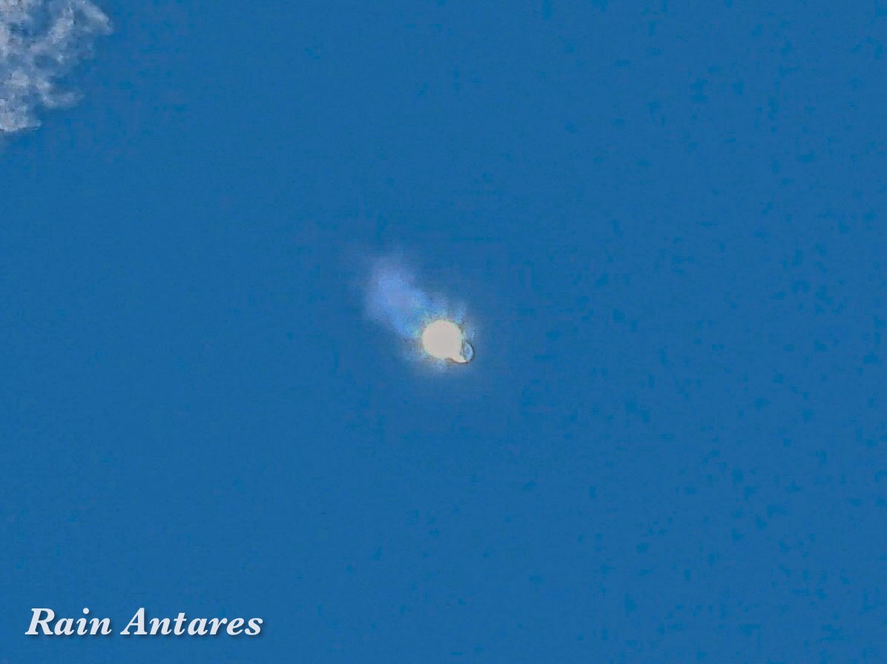

Rain Antares🏳️⚧️🍥
@Rain_Antar1121
T + 72s
#Zhuque3 #朱雀三号
凝华尾迹云～在这短暂的十秒里，燃烧产物中的水蒸气会直接凝华成晶莹剔透的冰晶云，拉出壮观的白色棉质飘带～
所以每一只晴空中的纯液体燃料火箭都有机会在蓝天上获得观众们的第二波惊叹꒰｡ › ·̮ ‹ ｡꒱固体燃料就没这个待遇咯🥰
朱雀抛下白丝带的那一刻，随着大气逐渐稀薄，一级外侧八台天鹊-12A膨胀的尾焰给甲烷焰花清晰地绽开了八片粉紫色的花瓣～更像一朵花了呢，这是也多机并联专属的奇观…只有这一刻咱才能数清大红鸟有几台发动机ww
